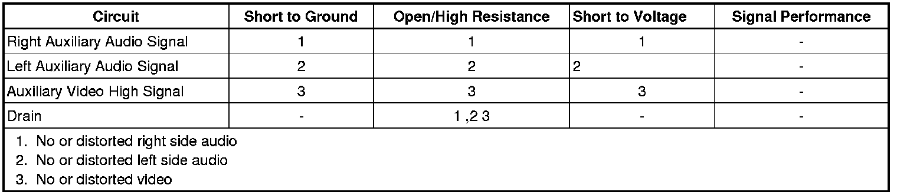

Audio/Video Disc Player Adapter - Audio or Video Inoperative or Degraded Quality
Audio/Video Disc Player Adapter - Audio or Video Inoperative or Degraded Quality
Diagnostic Instructions
* Perform the Diagnostic System Check - Vehicle (Initial Inspection and Diagnostic Overview) prior to using this diagnostic procedure.
* Review Strategy Based Diagnosis (Initial Inspection and Diagnostic Overview) for an overview of the diagnostic approach.
* Diagnostic Procedure Instructions (Initial Inspection and Diagnostic Overview) provides an overview of each diagnostic category.
Diagnostic Fault Information

Circuit/System Description
The audio/video jacks allow the connection of audio and video signals from an auxiliary device such as a camcorder, video game console or MP3 player to the rear seat entertainment system. The middle jack is for left audio (white), the right jack is for right audio (red), and the left jack is for video (yellow). The system requires standard RCA cables to connect your auxiliary device to the RCA jacks. The auxiliary audio and video circuits are connected to the navigation radio.
Reference Information
Schematic Reference
Video System Schematics (Video System Schematics)
Connector End View Reference
Component Connector End Views (Connector Views)
Description and Operation
Video Entertainment System Description and Operation (Video Entertainment System Description and Operation)
Electrical Information Reference
* Circuit Testing (Component Tests and General Diagnostics)
* Connector Repairs (Component Tests and General Diagnostics)
* Testing for Intermittent Conditions and Poor Connections (Component Tests and General Diagnostics)
* Wiring Repairs (Component Tests and General Diagnostics)
Scan Tool Reference
Control Module References (Programming and Relearning) for scan tool information
Circuit/System Testing
Important: Verify the auxiliary audio or video input device is operating normally before performing this diagnostic procedure.
Auxiliary Video Malfunction
1. Ignition OFF, disconnect the X3 harness connector at the radio.
2. Ignition ON, verify that a test lamp does not illuminate between B+ and the auxiliary video high signal circuit terminal 8.
• If the test lamp illuminates, test the signal circuit for a short to ground. If the circuit tests normal, replace the auxiliary video/audio jack assembly.
3. Verify that a test lamp does not illuminate between the auxiliary video high signal circuit terminal 8 and ground.
• If the test lamp illuminates, test the signal circuit for a short to voltage. If the circuit tests normal, replace the auxiliary video/audio jack assembly.
4. Ignition OFF, test for less than 1 ohm between the signal circuit at terminal 8 and the video jack terminal (yellow).
• If greater than the specified range, test the signal circuit for an open/high resistance. If the circuit tests normal, replace the auxiliary video/audio jack assembly.
5. Ignition OFF, test for less than 1 ohm between the drain wire circuit terminal 16 and ground.
• If greater than the specified range, test the drain wire circuit for an open/high resistance. If the circuit tests normal, replace the auxiliary video/audio jack assembly.
6. If all circuits test normal, replace the radio.
Auxiliary Audio Malfunction
1. Ignition OFF, disconnect the X3 harness connector at the radio.
2. Ignition ON, verify that a test lamp does not illuminate between B+ and the left auxiliary audio signal circuit terminal 1.
• If the test lamp illuminates, test the signal circuit for a short to ground. If the circuit tests normal, replace the auxiliary video/audio jack assembly.
3. Ignition ON, verify that a test lamp does not illuminate between B+ and the right auxiliary audio signal circuit terminal 2.
• If the test lamp illuminates, test the signal circuit for a short to ground. If the circuit tests normal, replace the auxiliary video/audio jack assembly.
4. Verify that a test lamp does not illuminate between the left auxiliary audio signal circuit terminal 1 and ground.
• If the test lamp illuminates, test the signal circuit for a short to voltage. If the circuit tests normal, replace the auxiliary video/audio jack assembly.
5. Verify that a test lamp does not illuminate between the left auxiliary audio signal circuit terminal 2 and ground.
• If the test lamp illuminates, test the signal circuit for a short to voltage. If the circuit tests normal, replace the auxiliary video/audio jack assembly.
6. Ignition OFF, test for less than 1 ohm between the left auxiliary audio signal circuit terminal 1 and the audio jack terminal (white).
• If greater than the specified range, test the signal circuit for an open/high resistance. If the circuit tests normal, replace the auxiliary video/audio jack assembly.
7. Ignition OFF, test for less than 1 ohm between the right auxiliary audio signal circuit terminal 2 and the audio jack terminal (red).
• If greater than the specified range, test the signal circuit for an open/high resistance. If the circuit tests normal, replace the auxiliary video/audio jack assembly.
8. Ignition OFF, test for less than 1 ohm between the drain wire circuit terminal 9 and ground.
• If greater than the specified range, test the drain wire circuit for an open/high resistance. If the circuit tests normal, replace the auxiliary video/audio jack assembly.
9. If all circuits test normal, replace the radio.
Repair Instructions
Perform the Diagnostic Repair Verification (Verification Tests) after completing the diagnostic procedure.
* Audio/Video Disc Player Adapter Replacement (Audio/Video Disc Player Adapter Replacement)
* Control Module References (Programming and Relearning) for Radio replacement, setup, and programming